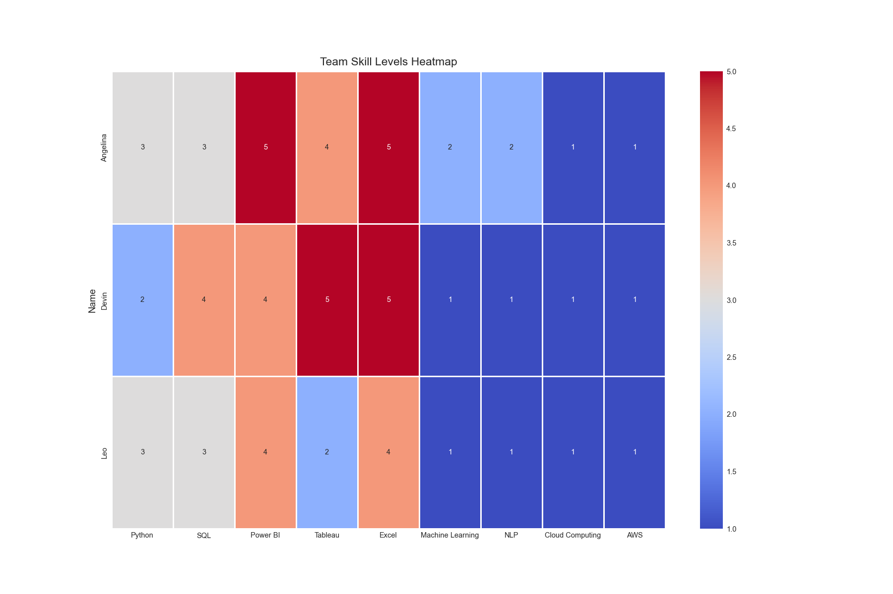

To evaluate the current technical skill set for each team member, each team member performed a self-rating for a set of core competencies for data analytics and data science, which included Python, SQL, Power BI, Tableau, Excel, Machine Learning, Natural Language Processing (NLP), Cloud Computing, and AWS. The assessment was made on a five-point scale, and the rating values were then compiled into a dataframe for further analysis. We then leveraged a Seaborn heatmap to identify where our strengths concentrated and pinpoint where the gaps existed.
Code
# _setup.qmdimport matplotlib.pyplot as pltimport seaborn as snsimport plotly.io as pioimport plotly.graph_objects as goimport plotly.express as px# Define a consistent themecustom_theme = go.layout.Template( layout=go.Layout( font=dict(family="Arial", size=12, color="#000000"), title=dict(font=dict(size=16, family="Arial")), paper_bgcolor="white", plot_bgcolor="white", colorway=px.colors.qualitative.Set2 ))pio.templates["custom_white"] = custom_themepio.templates.default ="custom_white"plt.style.use("seaborn-v0_8-whitegrid")plt.rcParams.update({"font.family": "Arial","font.size": 7,"axes.titlesize": 11,"axes.labelsize": 9,"figure.dpi": 120,"savefig.dpi": 150})sns.set_palette("Set2")
Code
import pandas as pd# Load pre-cleaned datasetdf = pd.read_csv("data/cleaned_job_postings.csv")
Code
# Create list of relevant analytics skills and rate each member from 1-5import pandas as pdskills_data = {"Name": ["Angelina", "Devin", "Leo"],"Python": [3, 2, 3],"SQL": [3, 4, 3],"Power BI": [5, 4, 4],"Tableau": [4, 5, 2],"Excel": [5, 5, 4],"Machine Learning": [2, 1, 1],"NLP": [2, 1, 1],"Cloud Computing": [1, 1, 1],"AWS": [1, 1, 1]}# Convert to dataframe df_skills = pd.DataFrame(skills_data)df_skills.set_index("Name", inplace=True)df_skills# Plot df as a heatmap to visualize skill distributionimport seaborn as snsimport matplotlib.pyplot as pltplt.figure(figsize=(12, 8))sns.heatmap(df_skills, annot=True, cmap="coolwarm", linewidths=0.5)plt.title("Team Skill Levels Heatmap")#plt.show()plt.close()

Figure 8: Team Skill Levels Heatmap
Which skills should each member prioritize learning?
Angelina – Strong in visualization tools (Power BI 5, Tableau 4, Excel 5). Next priorities: Cloud, AWS, Machine Learning, and NLP. These are high-demand in job postings (Cloud: 64k+, AWS: 10k+, ML/NLP combined: 23k+).
Devin – Solid in Excel (5) and Tableau (5), but weakest in Python, ML, NLP, and AWS. Needs to raise Cloud as well.
Leo – Stronger in Power BI (4) and Excel (4), but very low in ML, NLP, Cloud, and AWS. Should also build up Python and SQL to meet market demand (Python: 17k+, SQL: 43k+ mentions).
2 External Skills Assessment using Natural Language Processing techniques
To identify the most in-demand skills in the analytics job market, we analyzed the job descriptions from the Lightcast dataset by leveraging Natural Language Processing (NLP) techniques to process the BODY column which contained detailed job descriptions. Below is a summary of the data preparation and extraction process:
Text normalization: To ensure consistency, job descriptions were converted to lowercase, Unicode-normalized format, and whitespaces were stripped.
Tokenization: Numbers and punctuation were filtered out to ensure words can be captured and extracted properly.
Stopword removal: To further filter and concentrate only on meaningful technical words, common English stopwords were removed using Scikit-learn’s built-in stopword list.
Keyword filtering: A predefined list of relevant analytics skills (e.g., Python, SQL, AWS, Tableau, Excel, Pandas, Spark, Machine Learning, NLP, Cloud Computing) was used to identify and count occurrences within the job descriptions.
Frequency analysis: Using Python’s Counter() function, we tallied the frequency of each skill keyword and visualized in a column chart to understand their significance in the job market.
Code
## Extract most in-demand skills from JD (optimized)import reimport osimport unicodedatafrom collections import Counter# Import stopwords (Angelina note: switched from NLTK to sklearn's built-in stopwords,# which avoids downloads and runs faster)try:from sklearn.feature_extraction.text import ENGLISH_STOP_WORDS stop_words =set(ENGLISH_STOP_WORDS)exceptException:# Minimal fallback if sklearn is missing stop_words = {"a","an","and","are","as","at","be","by","for","from","has","he","in","is","it","its","of","on","that","the","to","was","were","will","with" }# Helper function to normalize text# (Angelina note: ensures Unicode normalized, casefolded, and whitespace trimmed)def nfc_casefold_trim(s: str) ->str: s = unicodedata.normalize("NFC", str(s)).casefold()return re.sub(r"\s+", " ", s).strip()# Compile regex once (Angelina note: faster than re-compiling each loop)word_re = re.compile(r"[a-z]+")# Pull description from job postings and count words (streaming, no giant string build)print("Scanning job descriptions and counting tokens (streaming)...")words_count = Counter()for txt in df["BODY"].dropna().astype(str): t = nfc_casefold_trim(txt) words_count.update(w for w in word_re.findall(t) if w notin stop_words)# Define a list of skillsskills_list = {"python", "sql", "aws", "docker", "tableau", "excel","pandas", "numpy", "spark", "machine", "learning","nlp", "cloud", "computing", "power"}# Extract only the predefined skills that appear in job postingsskills_filtered = {s: words_count[s] for s in skills_list if words_count.get(s, 0) >0}# Print results, sorted by most frequentprint("Top data analytics skills from job descriptions")for skill, count insorted(skills_filtered.items(), key=lambda kv: (-kv[1], kv[0])):print(f"{skill}:{count}")# --------- added simple bar chart ---------if skills_filtered: os.makedirs("figures", exist_ok=True) items =sorted(skills_filtered.items(), key=lambda kv: kv[1], reverse=True) labels = [k for k, _ in items] values = [v for _, v in items] plt.figure(figsize=(8, 4.5)) plt.bar(labels, values) plt.title("Most In-Demand Skills from Job Descriptions") plt.xlabel("Skill") plt.ylabel("Count") plt.xticks(rotation=45, ha="right") plt.tight_layout() out_path ="figures/jd_top_skills.png" plt.savefig(out_path, dpi=150)#plt.show() plt.close()#print(f"[Saved chart] {out_path}")
Scanning job descriptions and counting tokens (streaming)...
Top data analytics skills from job descriptions
cloud:42787
sql:35871
power:21894
excel:19874
learning:16361
tableau:14609
python:13402
aws:8510
machine:5592
computing:2588
spark:1496
docker:613
pandas:378
nlp:293
numpy:187
Figure 9: Most In-demand skills from Job Descriptions
3 Propose an Improvement Plan
According to our analysis, job postings show high demand for Cloud, SQL, Python, ML, and AWS. Our team is strong in visualization (Excel, Power BI, Tableau) but weaker in Cloud, ML, and NLP. This plan aligns our learning with market needs, provides specific resources, and ensures collaboration strategies so the whole team can close the gap together.
What courses or resources can help?
Cloud & AWS – free cloud provider tutorials, AWS Educate, and cloud labs for hands-on practice.
Machine Learning & NLP – scikit-learn tutorials, Kaggle competitions, and university modules on ML/NLP.
Python & SQL – interactive platforms (Jupyter notebooks, LeetCode SQL), and official documentation.
Docker & Spark – short online workshops, Spark quickstarts, and Docker “getting started” labs.
How can the team collaborate to bridge skill gaps?
Role rotation: assign rotating leads (“cloud lead,” “ML/NLP lead,” “Python/SQL lead”) for mini-projects so each teammate practices outside their strengths.
Lightning talks: weekly 15-minute sessions where one teammate teaches a concept or tool they just learned.
Pair programming: match stronger members (for example, Angelina for visualization) with weaker ones (for example, Devin on Python) to share knowledge in real time.
Shared resources: maintain a team wiki with reusable queries, cloud setup notes, and code snippets.